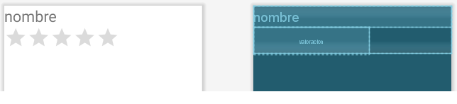

RecyclerView
Empezaremos programando el RecyclerViewFragment para que muestre en un RecyclerView
la lista de elementos (los del ArrayList).
Será necesario poner a punto los 3 elementos:
- RecyclerView
- ViewHolder
- Adapter
RecyclerView
El ReciclerView es solamente el contenedor en el cual se van a mostrar los datos. Se añade al layout
en el cual se tiene que mostrar la lista (es decir, en el layout del RecyclerElementosFragment).
En principio el RecyclerView estará vació. Y será más adelante cuando lo rellenaremos (con código Java) con
los elementos del ArrayList.
Lo único a tener en cuenta cuando se añade al layout es especificar la disposición de los elementos; se hace
con el atributo app:layoutManager y en esta app utilizamos el LinearLayoutManager.
fragment_recycler_elementos.xml
<FrameLayout ...>
<androidx.recyclerview.widget.RecyclerView
android:id="@+id/recycler"
android:layout_width="match_parent"
android:layout_height="match_parent"
app:layoutManager="androidx.recyclerview.widget.LinearLayoutManager" />
</FrameLayout>
ViewHolder
El ViewHolder és la plantilla para mostrar un elemento de la lista. Se debe crear un fichero con la disposición
y una clase que habilite el ViewBinding.
En el fichero de layout, ponemos un TextView para mostrar el nombre del elemento, y un RatingBar para la valoracion.
viewholder_elemento.xml
<?xml version="1.0" encoding="utf-8"?>
<LinearLayout xmlns:android="http://schemas.android.com/apk/res/android"
android:layout_width="match_parent"
android:layout_height="wrap_content"
android:orientation="vertical">
<TextView
android:id="@+id/nombre"
android:layout_width="match_parent"
android:layout_height="wrap_content"
android:textSize="32sp" />
<RatingBar
android:id="@+id/valoracion"
android:layout_width="wrap_content"
android:layout_height="wrap_content"
android:numStars="5" />
</LinearLayout>

El TextView y el RatingBar los rellenaremos con los datos de un elemento de la lista. Para ello,
creamos una clase en la que guardaremos la variable binding, mediante la cual accederemos
al TextView y al RatingBar
Llamaremos a esta clase ElementoViewHolder. Debe extender de la clase RecyclerView.ViewHolder.
RecyclerElementosFragment.java
public class RecyclerElementosFragment extends Fragment {
// ...
class ElementoViewHolder extends RecyclerView.ViewHolder {
private final ViewholderElementoBinding binding;
public ElementoViewHolder(ViewholderElementoBinding binding) {
super(binding.getRoot());
this.binding = binding;
}
}
}
Adapter
El Adapter será el encargado de crear las copias del ViewHolder, y rellenarlas con los datos del ArrayList.
Para crear un Adaptador hay que extender la clase RecyclerView.Adapter y se debe especificar en el diamante <>
la clase del ViewHolder.
Se deben anular 3 métodos:
onCreateViewHolder(): este método lo llama el RecyclerView cuando necesita una nueva copia del ViewHolder
para mostrar un elemento.
onBindViewHolder(): lo llama el RecyclerView para rellenar los datos de un ViewHolder en una posición determinada.
getItemCount(): lo llama el RecyclerView para saber cuántos elementos en total se van a mostrar.
Por último, también es muy común hacer que el adaptador mantenga una referencia al ArrayList de los elementos. Para ello,
declaramos una variable, y un método para establecerla. Un aspecto clave de este método es la llamada a notifyDatasetChanged().
Este método notifica al RecyclerView que la lista ha cambiado y que debe volver a regenerar todos los ViewHolders.
El código del adaptador queda así:
RecyclerElementosFragment.java
public class RecyclerElementosFragment extends Fragment {
// ...
class ElementosAdapter extends RecyclerView.Adapter<ElementoViewHolder> {
List<Elemento> elementos;
@NonNull
@Override
public ElementoViewHolder onCreateViewHolder(@NonNull ViewGroup parent, int viewType) {
return new ElementoViewHolder(ViewholderElementoBinding.inflate(getLayoutInflater(), parent, false));
}
@Override
public void onBindViewHolder(@NonNull ElementoViewHolder holder, int position) {
Elemento elemento = elementos.get(position);
holder.binding.nombre.setText(elemento.nombre);
holder.binding.valoracion.setRating(elemento.valoracion);
}
@Override
public int getItemCount() {
return elementos != null ? elementos.size() : 0;
}
public void establecerLista(List<Elemento> elementos){
this.elementos = elementos;
notifyDataSetChanged();
}
}
}
Una vez creada la clase, hay que crear un objeto y asignarlo al RecyclerView con el método setAdapter().
RecyclerElementosFragment.java
public class RecyclerElementosFragment extends Fragment {
// ...
@Override
public void onViewCreated(@NonNull View view, @Nullable Bundle savedInstanceState) {
// ...
ElementosAdapter elementosAdapter = new ElementosAdapter();
binding.recycler.setAdapter(elementosAdapter);
}
// ...
}
El último paso solo es asignar la lista de elementos del adaptador (la variable elementos). La lista
la observaremos del ViewModel y la asignaremos llamando al método establecerLista().
RecyclerElementosFragment.java
public class RecyclerElementosFragment extends Fragment {
// ...
@Override
public void onViewCreated(@NonNull View view, @Nullable Bundle savedInstanceState) {
// ...
elementosViewModel.obtenerListaElementos().observe(getViewLifecycleOwner(), new Observer<List<Elemento>>() {
@Override
public void onChanged(List<Elemento> elementos) {
elementosAdapter.establecerLista(elementos);
}
});
}
// ...
}